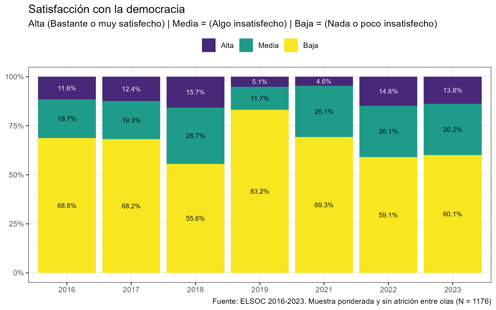
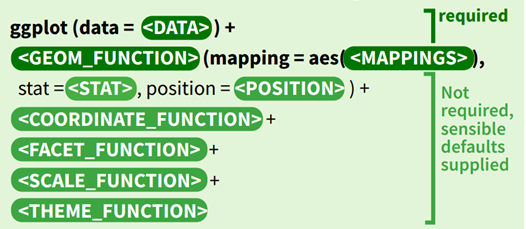
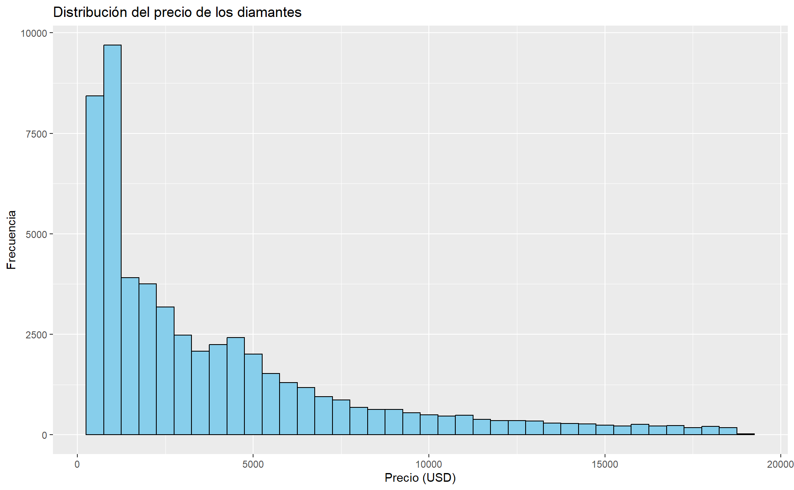
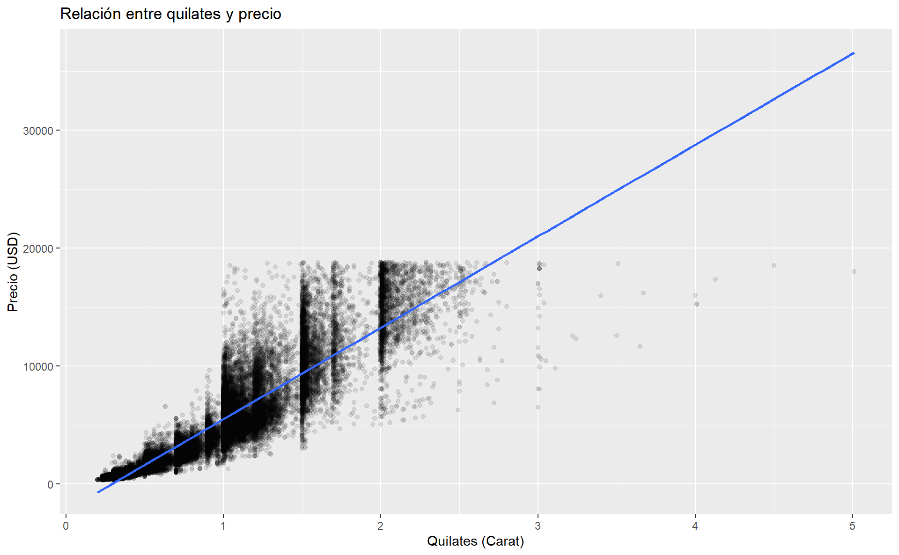
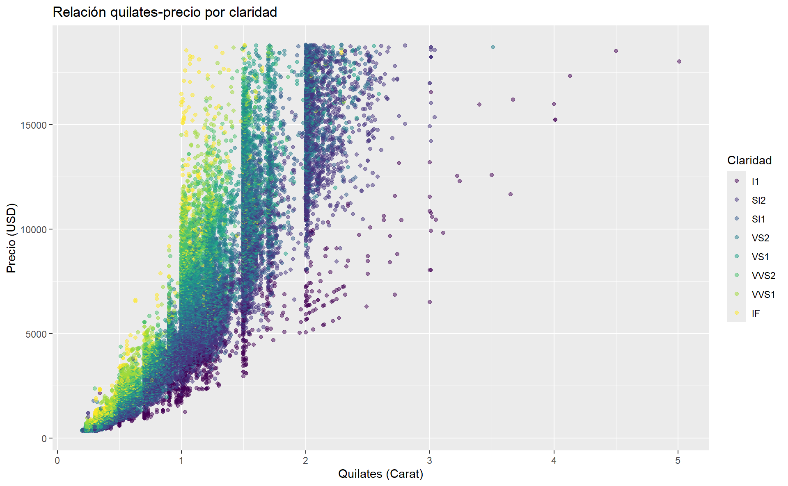

Ciencia de Datos Aplicada con RStudio
Sesión V: Introducción a la Visualización de Datos con ggplot2
Estructura de la sesión
1. Repaso y objetivos
¿Qué vimos en la sesión anterior?
- Transformación de datos: Usamos
mutate()para crear y modificar variables. - Lógica condicional: Aprendimos a recodificar con
if_else(),case_when() y otras funciones. - Resumen de datos: Vimos el poder de
group_by()ysummarise()para agregar datos y calcular estadísticas. - Conteo: Utilizamos
count()como un atajo para contar observaciones por grupo.
Objetivo de hoy
Hoy damos el salto de la manipulación a la comunicación visual. Empezamos a explorar una de las herramientas más potentes del tidyverse: ggplot2.
Construir gráficos univariados y bivariados efectivos para la representación visual de datos.
Al final de esta sesión, seremos capaces de traducir nuestras tablas y resúmenes de datos en visualizaciones claras e informativas.

2. Módulo: La Gramática de los Gráficos
¿Qué es la visualización de datos?
“En términos simples, se trata de gráficos y el acto de seleccionar el gráfico correcto para mostrar las características de los datos que se cree que son más relevantes” (Kirk, 2018, p.17).
Según Kirk (2018), sus fases son:
- Formula tu plan de trabajo: planifica, define e inicia tu proyecto.
- Trabajando con la base de datos: produce, maneja y prepara tus datos.
- Establece tu pensamiento editorial: define qué le mostrarás a tu audiencia.
- Desarrollar la solución de diseño: crear un gráfico mediante un software.
¿Por qué visualizar datos?
En ciencias sociales, un gráfico bien hecho puede revelar patrones, tendencias y relaciones que una tabla de números no muestra con tanta claridad.
- Exploración: Nos ayuda a entender la distribución de nuestras variables.
- Comunicación: Es una forma efectiva de presentar nuestros hallazgos a distintas audiencias.
- Diagnóstico: Permite identificar valores atípicos (outliers) o problemas en los datos.
Ventajas y desventajas de los gráficos
Ventajas
- Facilita el entendimiento de los datos, lo cual fomenta abrir la ciencia.
- Tiene la capacidad de resumir datos, mostrando los elementos más relevantes.
- Es atractivo y capta mejor la atención de los y las lectoras.
Desventajas
- Limitaciones visuales a medida que crece la cantidad de variables que quiero representar
El paquete ggplot2
ggplot2 es la implementación en R de la “Gramática de los Gráficos”. En lugar de pensar en tipos de gráficos (barras, puntos, etc.), pensamos en sus componentes.
Todo gráfico es un mapeo de los datos a atributos estéticos (color, forma, tamaño) de objetos geométricos (puntos, líneas, barras).

Las 3 capas esenciales de un gráfico
Todo gráfico que hagamos tendrá al menos estas tres partes, unidas por el signo +:
ggplot(data = <DATOS>): El lienzo inicial donde especificamos nuestro set de datos.aes(...): Las estéticas (aesthetics), donde mapeamos las variables de nuestros datos a los ejes (x, y), colores, tamaños, etc.geom_<...>(): Las geometrías, que definen la forma que tomarán los datos en el gráfico (puntos, barras, líneas, etc.).

2.1. Gráficos Univariados
Sirven para analizar una sola variable a la vez. Son el primer paso en cualquier análisis exploratorio.
Histograma:
geom_histogram() es ideal para visualizar la distribución de una variable numérica continua.
library(tidyverse)
# Usaremos el dataset 'diamonds' que viene incluido en ggplot2
datos_diamantes <- diamonds
# Histograma del precio de los diamantes
ggplot(data = datos_diamantes, mapping = aes(x = price)) +
geom_histogram(binwidth = 500, fill = "skyblue", color = "black") +
labs(title = "Distribución del precio de los diamantes",
x = "Precio (USD)",
y = "Frecuencia")
Gráfico de barras:
geom_bar() es perfecto para visualizar la frecuencia de una variable categórica.
Conectando dplyr con ggplot2
¿Y si queremos graficar un resumen que nosotros creamos? ¡Usamos el pipe |>!
# 1. Calculamos el número de diamantes por claridad
# 2. Lo pasamos directamente a ggplot
datos_diamantes |>
count(clarity) |> # Usamos count() de la sesión pasada
ggplot(mapping = aes(x = clarity, y = n)) + # <- OJO, cuando comienza ggplot se "encadena" con un +
geom_col() # Usamos geom_col() cuando ya tenemos el valor de 'y' calculadoSi bien pipe se puede encadenar con ggplot, desde la función ggplot hacia abajo se comienzan a agregar capas con un signo +.
2.2. Gráficos Bivariados
Nos permiten explorar la relación entre dos variables.
Gráfico de dispersión (scatter plot)
geom_point() Es la mejor opción para visualizar la relación entre dos variables numéricas. Se suele utilizar con geom_smooth
# Relación entre quilates (carat) y precio (price)
ggplot(data = datos_diamantes, mapping = aes(x = carat, y = price)) +
geom_point(alpha = 0.1) + # alpha regula la transparencia
geom_smooth(method = "lm") + #
labs(title = "Relación entre quilates y precio",
x = "Quilates (Carat)",
y = "Precio (USD)")
Gráfico de cajas (box plot):
Este tipo de gráfico es excelente para comparar la distribución de una variable numérica a través de diferentes categorías. Se activa con geom_boxplot().
Agregando una tercera variable
Podemos mapear una tercera variable a estéticas como color, shape (forma) o size (tamaño).
# Relación entre quilates y precio, coloreando por claridad (clarity)
ggplot(data = datos_diamantes, mapping = aes(x = carat, y = price, color = clarity)) +
geom_point(alpha = 0.5) +
labs(title = "Relación quilates-precio por claridad",
x = "Quilates (Carat)",
y = "Precio (USD)",
color = "Claridad") # Modifica el título de la leyenda
3. Resumen y próximos pasos
Resumen de la sesión
Gramática de los Gráficos: Aprendimos que un gráfico se compone de datos, estéticas y geometrías.
Capas: Vimos que la estructura básica de un gráfico en ggplot2 es ggplot() + geom_<…>().
Gráficos Univariados: Creamos histogramas (geom_histogram) y gráficos de barras (geom_bar).
Gráficos Bivariados: Exploramos relaciones con gráficos de dispersión (geom_point) y boxplots (geom_boxplot).
Flujo de trabajo: Integramos dplyr y ggplot2 usando el pipe |> para visualizar datos ya procesados.
Proximos pasos
En la siguiente sesión volveremos al data wrangling, abordando tópicos avanzados que permiten una visualización más optima.
Manejo de datos faltantes: identificar, gestionar e imputar datos faltantes aplicando métodos consistentes con el enfoque tidyverse.
Union de bases de datos: reconocer y unir bases de datos en base a elementos comunes.